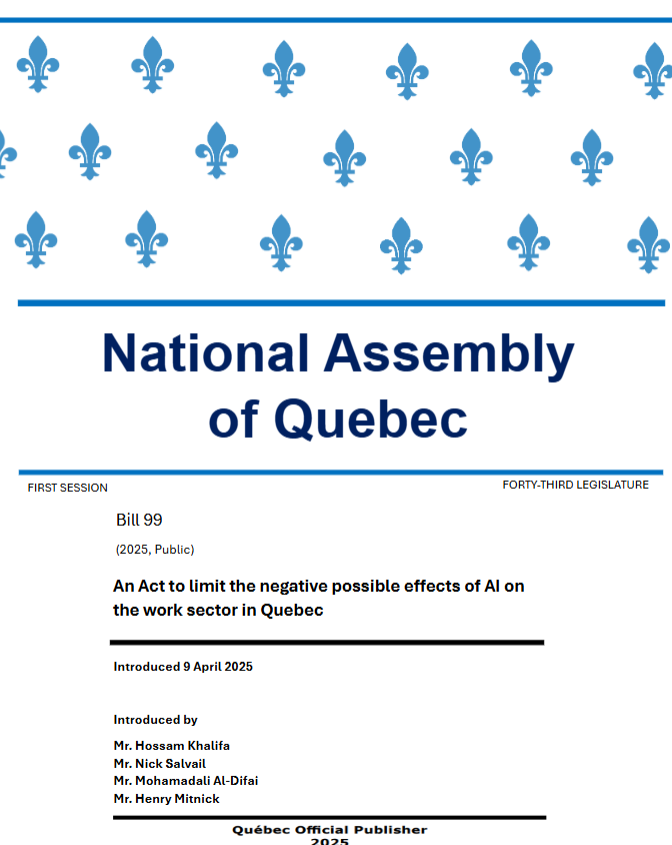

A mock bill exploring how Quebec could reduce the negative effects of artificial intelligence on the workforce. It proposes a new oversight body, mandatory impact assessments before large AI rollouts, required disclosure of AI use to employees, and a reskilling fund for displaced workers. The bill was presented in a simulated session of the National Assembly of Quebec.
I worked on this with a team of four. I researched how bills are named, structured and submitted at the National Assembly of Quebec, checked that our bill followed that format, and wrote the bill itself. Together with my teammates, I then presented it in a mock session of the National Assembly.
